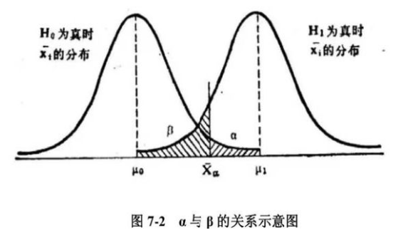

我们常用PASS做样本量的计算, 不过本人更熟悉Stata, 所以我把常用的样本量计算情景都用stata实现了一遍, 希望对大家有用, 对自己也是一个备忘录。
理论知识
在估计样本量的时候, 我们通常需要知道自己预期的实验结果, 而有些统计指标需要在这里提前解释一下:
- α显著性水平: 犯Ⅰ型错误的概率, 即H0假设为真, 但是我们却没有接受H0, 导致错误的抛弃了H0, 通常α取值0.05(双侧检验)
- 1-β统计效能: β是犯Ⅱ型错误的概率, 即H1假设为真, 但是我们却没有接受H1, 导致错误的抛弃了H1, 通常β取值0.2, 即统计效能power取值0.8
单样本均值检验
已知总体均值, 想要知道样本均值是否等于总体均值。
案例:
考虑Tamhane和Dunlop（2000,209）的一个例子，该例子讨论了有改善SAT成绩口语部分的辅导计划。以前的研究发现学生
在没有任何教练计划的情况下重新参加SAT考试，他们的得分平均提高了15分, 标准差约为40分。一项新的教练计划声称可以提高40分。假设分数的变化大致为正态分布。该示例中感兴趣的参数是测试分数的平均变化。为了测试索赔，调查人员希望进行另一项研究并计算样本量, 需要使用5％显著性的双侧检验，80％的统计效能。我们假设总体的分数变化的标准差未知, 使用40分的估计值。
我们的stata命令是:
1 | power onemean 15 40, sd(40) |
Performing iteration ... Estimated sample size for a one-sample mean test t test Ho: m = m0 versus Ha: m != m0 Study parameters: alpha = 0.0500 power = 0.8000 delta = 0.6250 m0 = 15.0000 ma = 40.0000 sd = 40.0000 Estimated sample size: N = 23
结果现实, 我们只需要23个样本即可。
如果我们项使用1%的显著性, 可以写成:
1 | power onemean 15 40, sd(40) alpha(.01) |
Performing iteration ... Estimated sample size for a one-sample mean test t test Ho: m = m0 versus Ha: m != m0 Study parameters: alpha = 0.0100 power = 0.8000 delta = 0.6250 m0 = 15.0000 ma = 40.0000 sd = 40.0000 Estimated sample size: N = 34
当然, 我们可以不指定备择假设的均值, 只需要指定差值即可:
1 | power onemean 15, sd(40) diff(25) |
Performing iteration ... Estimated sample size for a one-sample mean test t test Ho: m = m0 versus Ha: m != m0 Study parameters: alpha = 0.0500 power = 0.8000 delta = 0.6250 m0 = 15.0000 ma = 40.0000 diff = 25.0000 sd = 40.0000 Estimated sample size: N = 23
如果总体的标准差已知, 并且就是40, 可以这样写:
1 | power onemean 15, sd(40) diff(25) knownsd |
Performing iteration ... Estimated sample size for a one-sample mean test z test Ho: m = m0 versus Ha: m != m0 Study parameters: alpha = 0.0500 power = 0.8000 delta = 0.6250 m0 = 15.0000 ma = 40.0000 diff = 25.0000 sd = 40.0000 Estimated sample size: N = 21
更多案例, 请参考stata手册: https://www.stata.com/manuals/psspoweronemean.pdf
对照组均值比较
假如我们要检验两个均值之间的差异性是否显著, 原假设是H0: µ1 = µ2 , 备择假设是s Ha: µ1 != µ2, 从文献中得知两个样本均值大概为8和12, 标准差均为9, 统计检验力为0.8, 显著性水平设置为0.05, 我们可以这样计算样本量:
1 | power twomeans 8 12, sd(9) |
Performing iteration ... Estimated sample sizes for a two-sample means test t test assuming sd1 = sd2 = sd Ho: m2 = m1 versus Ha: m2 != m1 Study parameters: alpha = 0.0500 power = 0.8000 delta = 4.0000 m1 = 8.0000 m2 = 12.0000 sd = 9.0000 Estimated sample sizes: N = 162 N per group = 81
假如m2可能的取值是10-14:
1 | power twomeans 8 (10(1)14), sd(9) |
Performing iteration ... Estimated sample sizes for a two-sample means test t test assuming sd1 = sd2 = sd Ho: m2 = m1 versus Ha: m2 != m1 +-------------------------------------------------------------------------+ | alpha power N N1 N2 delta m1 m2 sd | |-------------------------------------------------------------------------| | .05 .8 638 319 319 2 8 10 9 | | .05 .8 286 143 143 3 8 11 9 | | .05 .8 162 81 81 4 8 12 9 | | .05 .8 104 52 52 5 8 13 9 | | .05 .8 74 37 37 6 8 14 9 | +-------------------------------------------------------------------------+
如果是单侧检验:
1 | power twomeans 8 (10(1)14), sd(9) oneside |
Performing iteration ... Estimated sample sizes for a two-sample means test t test assuming sd1 = sd2 = sd Ho: m2 = m1 versus Ha: m2 > m1 +-------------------------------------------------------------------------+ | alpha power N N1 N2 delta m1 m2 sd | |-------------------------------------------------------------------------| | .05 .8 504 252 252 2 8 10 9 | | .05 .8 224 112 112 3 8 11 9 | | .05 .8 128 64 64 4 8 12 9 | | .05 .8 82 41 41 5 8 13 9 | | .05 .8 58 29 29 6 8 14 9 | +-------------------------------------------------------------------------+
配对样本均值比较
配对样本T检验样本量的计算:
- 假设: H0: µ2 − µ1 = d = 0 versus H1: d != 0
- 均值: ma1 = 73 ma2 = 57
- 标准差均为:σ= 36
- power: 0.8
- 显著性: α = 0.05
1 | power pairedmeans 73 57, sddiff(36) |
Performing iteration ... Estimated sample size for a two-sample paired-means test Paired t test Ho: d = d0 versus Ha: d != d0 Study parameters: alpha = 0.0500 ma1 = 73.0000 power = 0.8000 ma2 = 57.0000 delta = -0.4444 d0 = 0.0000 da = -16.0000 sd_d = 36.0000 Estimated sample size: N = 42
我们也可以只指定两个均值的差异量:
1 | power pairedmeans, altdiff(-16) sddiff(36) |
Performing iteration ... Estimated sample size for a two-sample paired-means test Paired t test Ho: d = d0 versus Ha: d != d0 Study parameters: alpha = 0.0500 power = 0.8000 delta = -0.4444 d0 = 0.0000 da = -16.0000 sd_d = 36.0000 Estimated sample size: N = 42
有时候我们可以指定两个样本的相关系数:
1 | power pairedmeans 73 57, corr(.5) sd1(29) sd2(40) |
Performing iteration ... Estimated sample size for a two-sample paired-means test Paired t test Ho: d = d0 versus Ha: d != d0 Study parameters: alpha = 0.0500 ma1 = 73.0000 power = 0.8000 ma2 = 57.0000 delta = -0.4470 sd1 = 29.0000 d0 = 0.0000 sd2 = 40.0000 da = -16.0000 corr = 0.5000 sd_d = 35.7911 Estimated sample size: N = 42
更多案例请参考stata手册: https://www.stata.com/manuals/psspowerpairedmeans.pdf
群组随机化设计（CRD）
考虑一个来自Ahn，Heo和Zhang（2015,37）的群组随机化设计的例子
试验的目的是评估健康促进计划对提高运动水平的影响。在这个研究中，
教会是随机化的分组单位，个体参与者是被分析的对象。教会将被随机分配到实验组
和对照组。调查人员计划从每个教会招募20名被试，并希望检测实验组和对照组之间的平均差异为1.1千卡/千克/天
。从以前的研究来看，共同的标准偏差是
3.67千卡/千克/天。研究者假设组内相关系数为0.025。
stata命令是:
由于对照组的均值大小并不影响最终的结果, 所以我们让对照组的均值为0。
1 | power twomeans 0 1.1, m1(20) m2(20) sd(3.67) rho(0.025) |
Performing iteration ... Estimated numbers of clusters for a two-sample means test Cluster randomized design, z test assuming sd1 = sd2 = sd Ho: m2 = m1 versus Ha: m2 != m1 Study parameters: alpha = 0.0500 power = 0.8000 delta = 1.1000 m1 = 0.0000 m2 = 1.1000 sd = 3.6700 Cluster design: M1 = 20 M2 = 20 rho = 0.0250 Estimated numbers of clusters and sample sizes: K1 = 13 K2 = 13 N1 = 260 N2 = 260
关于群组随机化的更多例子, 可以参考stata手册: https://www.stata.com/manuals/psspowertwomeanscluster.pdf
ANOVA
Oneway ANOVA
用于多组均值的比较, 举一个例子, 假设有三个分组:
- 假设H0: µ1 = µ2 = µ3
- 从以往研究中估计三组均值为: 21, 19, 18
- 三组共同方差是16
- alpha = 0.05
- beta = 0.2
stata命令是:
1 | power oneway 21 19 18, varerror(16) |
Performing iteration ... Estimated sample size for one-way ANOVA F test for group effect Ho: delta = 0 versus Ha: delta != 0 Study parameters: alpha = 0.0500 power = 0.8000 delta = 0.3118 N_g = 3 m1 = 21.0000 m2 = 19.0000 m3 = 18.0000 Var_m = 1.5556 Var_e = 16.0000 Estimated sample sizes: N = 105 N per group = 35
ANOVA的更多案例可以参考手册: https://www.stata.com/manuals/psspoweroneway.pdf
Twoway ANOVA
假设有一个2x3的分组设计, 各组的均值分别是: 19 18 32 \ 23 25 26, 组内方差为27, 我们可以这样计算样本量:
1 | matrix cm = (19, 18, 32 \ 23, 25, 26) |
Performing iteration ... Estimated sample size for two-way ANOVA F test for row effect Ho: delta = 0 versus Ha: delta != 0 Study parameters: alpha = 0.0500 power = 0.8000 delta = 0.8333 N_r = 2 N_c = 3 means =
更多Twoway ANOVA的案例可以看手册: https://www.stata.com/manuals/psspowertwoway.pdf
线性回归
一元回归系数检验
考虑一项假设性研究，其目标是调查每天锻炼时间对BMI的影响。
感兴趣的参数是斜率系数b。
我们的零假设是H0：b = 0,
我们希望计算BMI下降0.1 kg/m2所需的样本量
，使用5％级别的双侧检验，power为80％。我们假设锻炼时间的标准差为10
和BMI的标准差为4。
我们可以这样计算样本量:
1 | power oneslope 0 -0.1, sdx(10) sdy(4) |
Performing iteration ... Estimated sample size for a linear regression slope test t test Ho: b = b0 versus Ha: b != b0 Study parameters: alpha = 0.0500 power = 0.8000 delta = -0.2582 b0 = 0.0000 ba = -0.1000 sdx = 10.0000 sderror = 3.8730 sdy = 4.0000 Estimated sample size: N = 120
多元线性回归的R^2的显著性检验
R^2显著可以证明回归方程中至少有一个回归系数不为零。
- 假设: H0: R2 = 0
- 备择的R2取值是0.1
- α = 0.05
- power 0.8
- 2个协变量
stata命令是:
1 | power rsquared 0.10, ntested(2) |
Performing iteration ... Estimated sample size for multiple linear regression F test for R2 testing all coefficients Ho: R2_T = 0 versus Ha: R2_T != 0 Study parameters: alpha = 0.0500 power = 0.8000 delta = 0.1111 R2_T = 0.1000 ntested = 2 Estimated sample size: N = 90
参考手册: https://www.stata.com/manuals/psspowerrsquared.pdf
其他分析方法
在官方文档中有大量的案例, 包括均值比较/百分比比较/方差/相关分析/生存分析等, 大家都可以在这个页面找到: https://www.stata.com/features/power-and-sample-size/ 。
注意
本文由jupyter notebook转换而来, 您可以在这里下载notebook
统计咨询请加QQ 2726725926, 微信 mllncn, SPSS统计咨询是收费的
微博上@mlln-cn可以向我免费题问
请记住我的网址: mlln.cn 或者 jupyter.cn